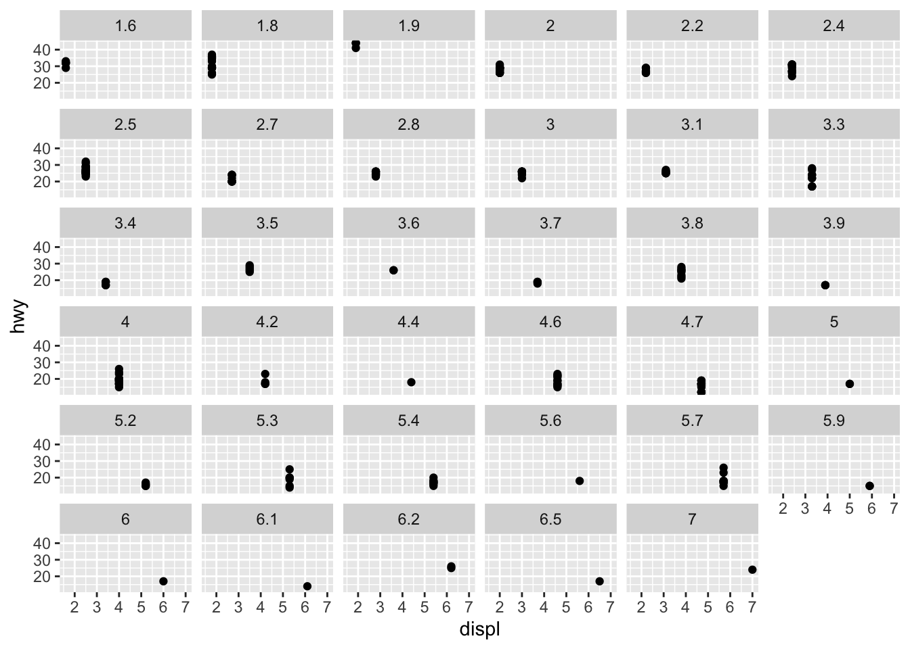
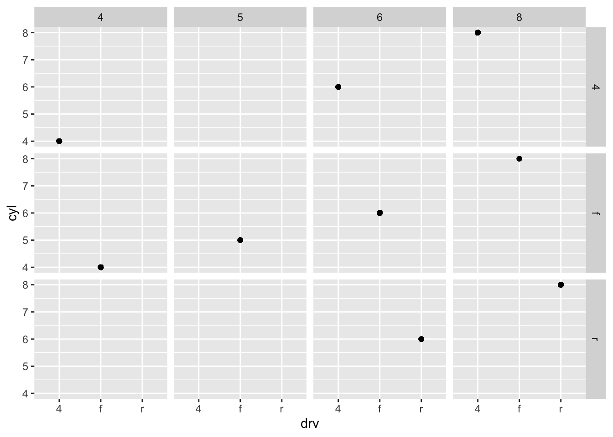
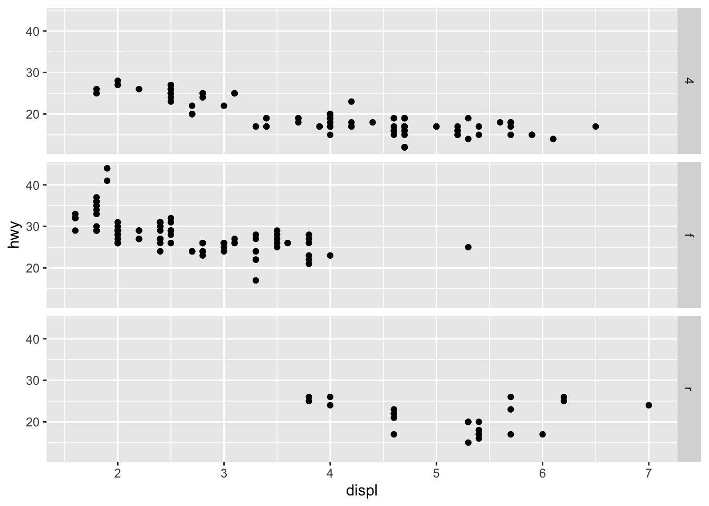
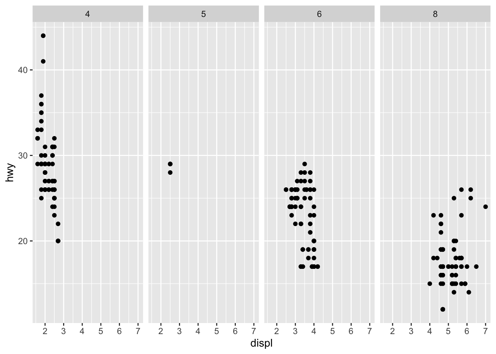
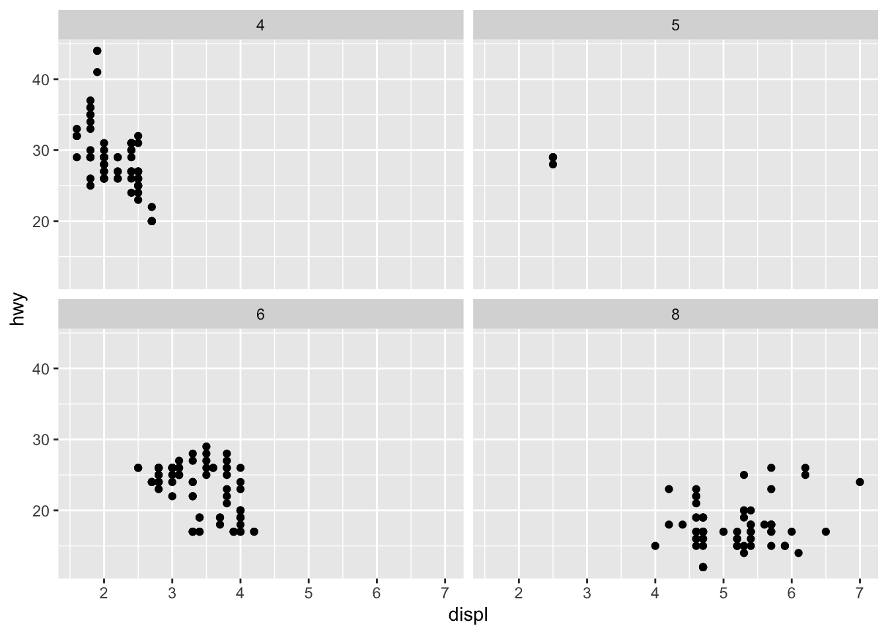
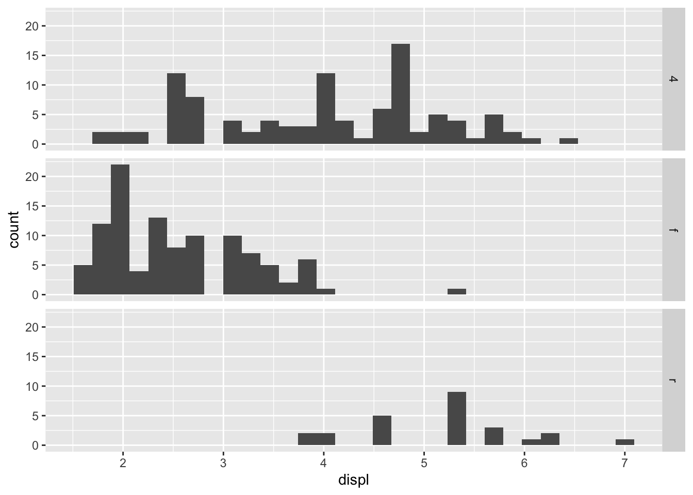
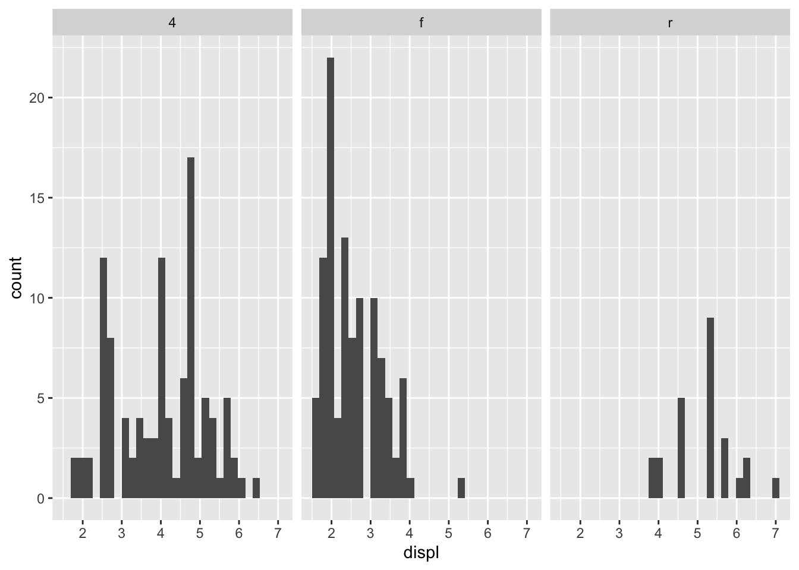
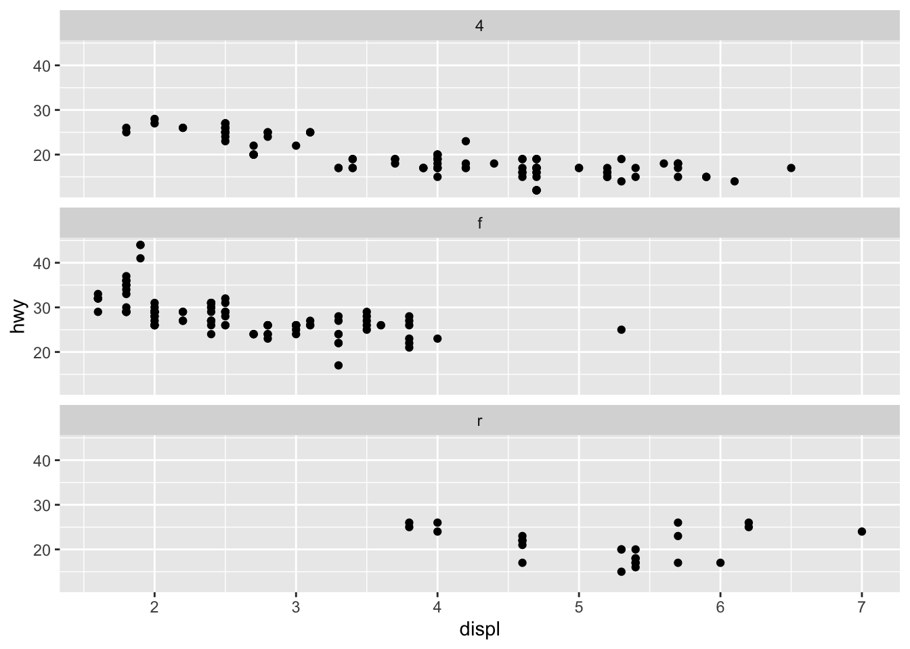

library(tidyverse)
library(ggthemes)facets
R for Data Science (2e), Chapter 9.5
Faceting with facet_wrap()
Splitting plots into subplots, each displaying one subset of the data.
Note
Use categorical variable!
Prerequisites
Dataset
mpg# A tibble: 234 × 11
manufacturer model displ year cyl trans drv cty hwy fl class
<chr> <chr> <dbl> <int> <int> <chr> <chr> <int> <int> <chr> <chr>
1 audi a4 1.8 1999 4 auto… f 18 29 p comp…
2 audi a4 1.8 1999 4 manu… f 21 29 p comp…
3 audi a4 2 2008 4 manu… f 20 31 p comp…
4 audi a4 2 2008 4 auto… f 21 30 p comp…
5 audi a4 2.8 1999 6 auto… f 16 26 p comp…
6 audi a4 2.8 1999 6 manu… f 18 26 p comp…
7 audi a4 3.1 2008 6 auto… f 18 27 p comp…
8 audi a4 quattro 1.8 1999 4 manu… 4 18 26 p comp…
9 audi a4 quattro 1.8 1999 4 auto… 4 16 25 p comp…
10 audi a4 quattro 2 2008 4 manu… 4 20 28 p comp…
# ℹ 224 more rowsglimpse(mpg)Rows: 234
Columns: 11
$ manufacturer <chr> "audi", "audi", "audi", "audi", "audi", "audi", "audi", "…
$ model <chr> "a4", "a4", "a4", "a4", "a4", "a4", "a4", "a4 quattro", "…
$ displ <dbl> 1.8, 1.8, 2.0, 2.0, 2.8, 2.8, 3.1, 1.8, 1.8, 2.0, 2.0, 2.…
$ year <int> 1999, 1999, 2008, 2008, 1999, 1999, 2008, 1999, 1999, 200…
$ cyl <int> 4, 4, 4, 4, 6, 6, 6, 4, 4, 4, 4, 6, 6, 6, 6, 6, 6, 8, 8, …
$ trans <chr> "auto(l5)", "manual(m5)", "manual(m6)", "auto(av)", "auto…
$ drv <chr> "f", "f", "f", "f", "f", "f", "f", "4", "4", "4", "4", "4…
$ cty <int> 18, 21, 20, 21, 16, 18, 18, 18, 16, 20, 19, 15, 17, 17, 1…
$ hwy <int> 29, 29, 31, 30, 26, 26, 27, 26, 25, 28, 27, 25, 25, 25, 2…
$ fl <chr> "p", "p", "p", "p", "p", "p", "p", "p", "p", "p", "p", "p…
$ class <chr> "compact", "compact", "compact", "compact", "compact", "c…# ?mpg, to get access to variables used in ds
# str(mpg), to access structure of objectExample
ggplot(
data = mpg,
mapping = aes(x = displ, y = hwy) ) +
geom_point() +
facet_wrap(~cyl)
Faceting plot with combination of two variables, use facet_grid()
ggplot(data = mpg,
mapping = aes(x = displ, y = hwy)) +
geom_point() +
facet_grid(drv ~ cyl) # double sided formula: rows ~ cols- two variables-1.png)
ggplot(data = mpg,
mapping = aes(x = displ, y = hwy) ) +
geom_point(mapping = aes(color = class)) +
scale_color_colorblind() + # by default, each facet shares same scale
# set scales = "free", to allow different scales for both axis # other option: "free_x", "free_y"
facet_grid(drv ~ cyl, scales = "free")- two variables-2.png)
Exercises
Q1: What happens if we facet on continuous variable?
ggplot(
data = mpg,
mapping = aes(x = displ, y = hwy)) +
geom_point() +
facet_wrap(~displ) 
A: Creates facet for every unique value of displ.
Q2: What do empty cells in the plot mean with facet_grid(drv ~ cyl)
ggplot(
data = mpg,
mapping = aes(x = drv, y = cyl)) +
geom_point() + # compare to: ggplot( data = mpg, mapping = aes(x = displ, y = hwy))
geom_point() + facet_grid(drv ~ cyl) # 
A: No corresponding values for some combinations.
Q3: What plots does following code make? What does . do?
ggplot( data = mpg, mapping = aes(x = displ, y = hwy) ) + geom_point() + facet_grid(drv ~ .)
ggplot( data = mpg ) + geom_point(mapping = aes(x = displ, y = hwy)) + facet_grid(. ~ cyl)
A: See ?facet_grid,‘. dot in the formula used to indicate there should be no faceting on this dimension (either row or column)’
Q4: Faceting vs color aesthetic; Advantages? Larger data set influence?
#|label: Q4
ggplot(data = mpg) +
geom_point(mapping = aes(x = displ, y = hwy)) +
facet_wrap(~cyl, nrow = 2)
A: Faceting challenging with large data set; Distinguish characteristics through colors might work better.
Q6: Which plot easier for comparing engine size (displ)?
ggplot(
data = mpg,
mapping = aes(x = displ) ) +
geom_histogram() +
facet_grid(drv ~.) # => best representation of engine size, when faceting rowwise `stat_bin()` using `bins = 30`. Pick better value `binwidth`.
ggplot(data = mpg,
mapping = aes(x = displ) ) +
geom_histogram() +
facet_grid(.~ drv)`stat_bin()` using `bins = 30`. Pick better value `binwidth`.
# Note: previous plot equivalent to see below
ggplot(data = mpg,
mapping = aes(x = displ) ) +
geom_histogram() +
facet_wrap(~drv)`stat_bin()` using `bins = 30`. Pick better value `binwidth`.
Q7: Recreating plot using facet_wrap() instead of facet_grid().
ggplot(data = mpg) +
geom_point(mapping = aes(x = displ, y = hwy)) +
facet_grid(drv ~ .)
ggplot(data = mpg) +
geom_point(mapping = aes(x = displ, y = hwy)) +
facet_wrap(~drv, nrow = 3)